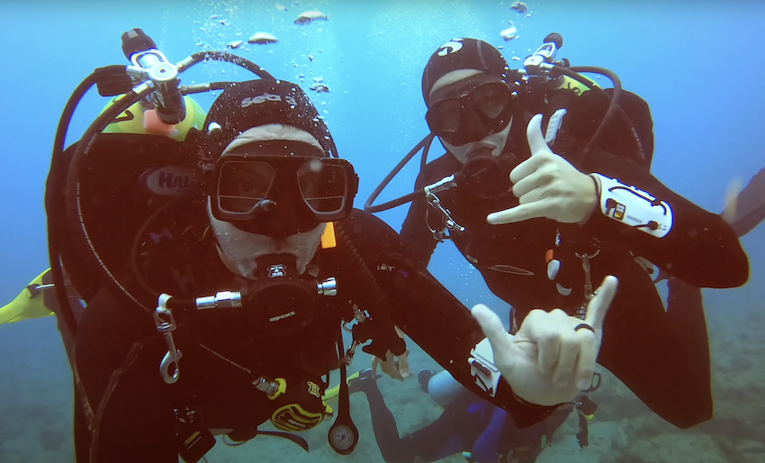

- There is so much to explore. Earning a scuba certification does more than just allow you to breathe
underwater (although that’s really, really cool.) It opens the door for you to go to places few
people have gone before.
- From vast oceans to crystal clear lakes, there is a huge world out there just ready for you to join it.
- Marine life is just better up close. There are millions of species out there. Sure, you can go to an aquarium and see some fish. But why not join them in their natural environment, up close and in person? Nothing compares to seeing a massive sea turtle or moray eel in their natural habitat.
- Freedom and tranquility. It’s hard to explain just how freeing it feels to escape gravity for the first time.
- There is something so peaceful about having all of the weight in your life lifted away as you float through the quiet, serene seascapes.


- It’s an amazing social activity. Diving is the perfect activity for couples, friends, and family. You will learn new ways to communicate with each other underwater and you will improve your appreciation for each other when on land as well. There are tons of divers out there looking for the perfect dive buddy to join them in the water. Plus, if you have kids, they can take the Junior Open Water Diver course and earn their certification alongside you.
- It gets you moving. Many of us don’t get out as much as we should, but once you start diving, you won’t think of anything else. Scuba is an outdoor activity and whether you choose to explore the vast, flowing seas or a relaxing, shallow lake, you will find yourself becoming a more active and exciting person.